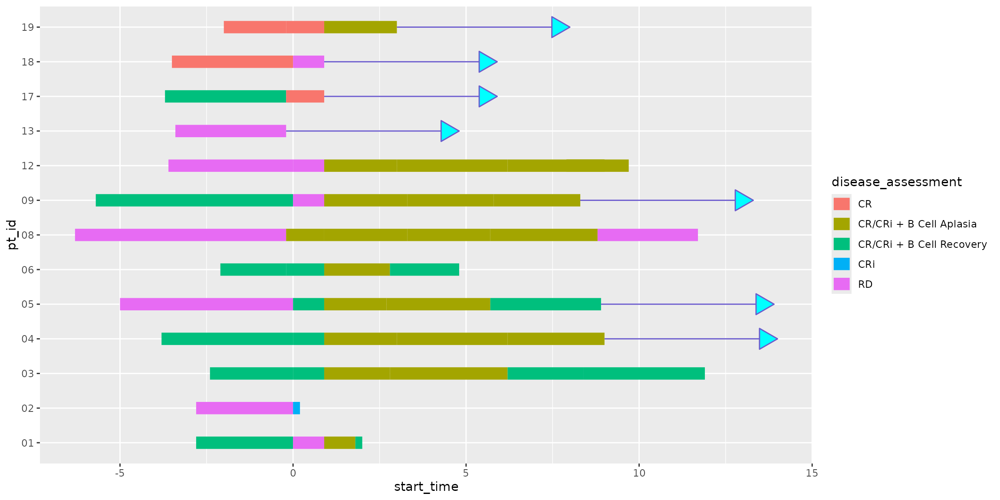
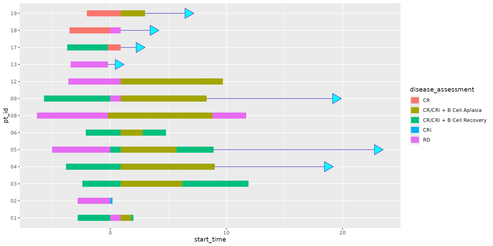

In certain scenarios, it can be useful to visually indicate the continuation of specific records in a swimmer plot. This is where the optional feature of adding arrows to the tail ends of swimmer plot lanes in ggswim comes in handy. Example use cases include illustrating the ongoing care of patients or highlighting record “survival” statuses.
Behind the scenes, the inclusion of arrows is facilitated by a call
to ggplot2::geom_segment(), coupled with some fine-tuning.
While the segments themselves have zero length, the arrows are made
possible with a defined length parameter. Within ggswim(),
users have full control over this length, along with options for color,
fill, and type (refer to ?ggswim for detailed
information).
Let’s dive into an example, similar to the one we’ve been using in the README, to see this feature in action.
library(ggswim)
ggswim(
data = patient_status,
mapping = aes(
x = value,
y = subject_id,
fill = cohort
)
)
Before we can incorporate arrows into our swimmer plot, we need to
designate a boolean column that informs ggswim() when to
append an arrow to a specific row. In our example using
patient_status, this column is named alive and
takes on TRUE or FALSE values to denote a
patient’s survival status at the time of plotting.
head(patient_status)
#> # A tibble: 6 × 7
#> subject_id cohort status alive name value time_sorting
#> <fct> <chr> <chr> <lgl> <chr> <dbl> <dbl>
#> 1 8 Cohort A On Study TRUE time_start 0 2
#> 2 8 Cohort A On Study TRUE time_end 2 2
#> 3 6 Cohort A On Study FALSE time_start 0 5
#> 4 6 Cohort A On Study FALSE time_end 5 5
#> 5 7 Cohort A On Study TRUE time_start 0 8
#> 6 7 Cohort A On Study TRUE time_end 8 8Let’s add the arrows onto the plot from before:
ggswim(
data = patient_status,
mapping = aes(
x = value,
y = subject_id,
fill = cohort
),
arrow = alive
)
Default values are set for arrows, but can be manipulated for different aesthetic preferences. Below we add color and fill specifiers:
ggswim(
data = patient_status,
mapping = aes(
x = value,
y = subject_id,
fill = cohort
),
arrow = alive,
arrow_colour = "cyan4",
arrow_fill = "cyan2"
)